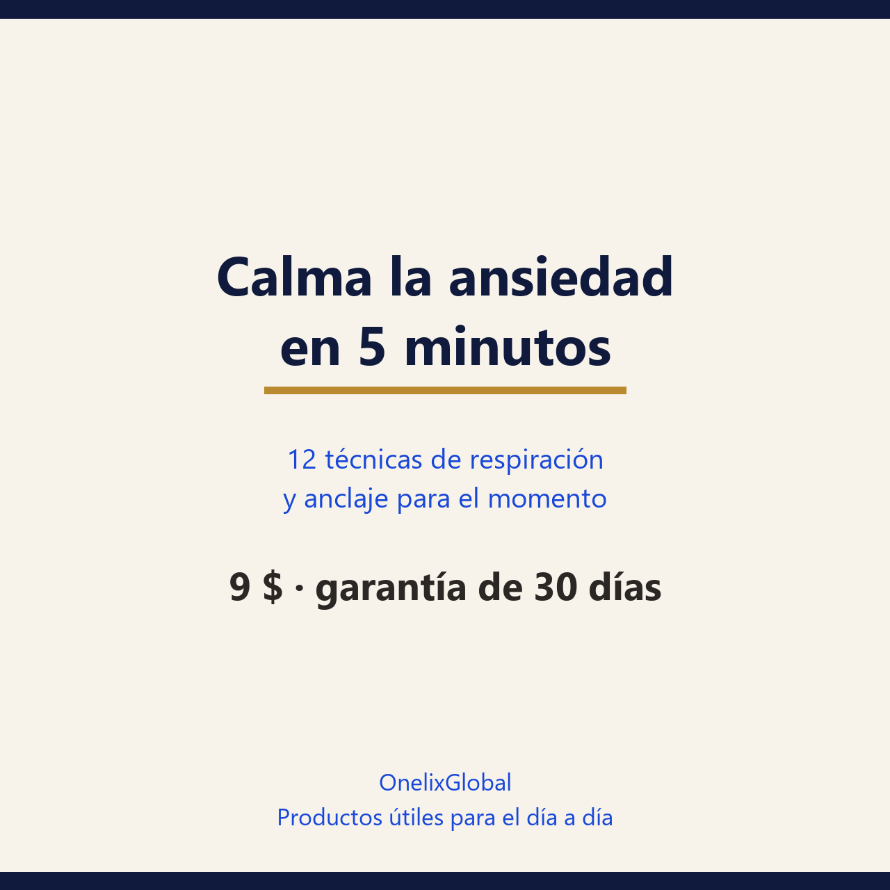

Doce técnicas de respiración y anclaje con instrucciones exactas, un plan de 14 días y una tarjeta de rescate para el bolsillo. No es terapia: es un botiquín de primeros auxilios.
30 días de garantía: si no te sirve, escribes y se resuelve.
Pago seguro en Gumroad · PDF para leer en el móvil, la tablet o impreso.

31 páginasPDF · españolSuspiro cíclico, respiración 4-6 (unas seis respiraciones por minuto), anclaje de cinco sentidos, diez exhalaciones largas, descarga física. Cada una con su instrucción y su para qué.
Tres suspiros cíclicos apenas notes la primera señal —mandíbula apretada, hombros arriba, respiración corta— y una acción concreta para volver al día.
La primera semana aprendes la técnica y eliges la tuya; la segunda la usas cuando importa, en posición difícil y con los ojos abiertos.
Tres niveles —mantenimiento, rescate y noche— más un registro de cinco columnas para ver si de verdad baja la tensión.
Preferimos decirlo claro antes de que pagues.
tienes picos puntuales: antes de una reunión, en el transporte, en una discusión, a la hora de dormir. Si quieres algo que se pueda hacer sin experiencia previa y sin descargar una app.
la ansiedad es sostenida, casi todos los días, desde hace semanas; si tienes ataques de pánico repetidos o miedo a que vuelvan; si usas alcohol o medicamentos sin fórmula para calmarte. Eso pide acompañamiento profesional. Y si hay pensamientos de hacerte daño, busca atención de urgencia ahora: esto no es material para un PDF. La guía es explícita con sus límites: las técnicas bajan la activación en el momento y los efectos medidos son modestos.
No. Baja la activación durante un pico y, con práctica, sostiene la calma a lo largo del día. Un trastorno de ansiedad se trata con un profesional.
En un ensayo de Stanford con cinco minutos diarios durante un mes, el suspiro cíclico —exhalación larga— fue el que más mejoró el ánimo y más bajó la frecuencia respiratoria. La guía te hace probar dos y quedarte con la tuya.
Cinco minutos al día. Los criterios de éxito hablan de 10 de los 14 días y de una bajada media de al menos dos puntos en la escala de tensión.
No. Tu cuerpo y un temporizador.